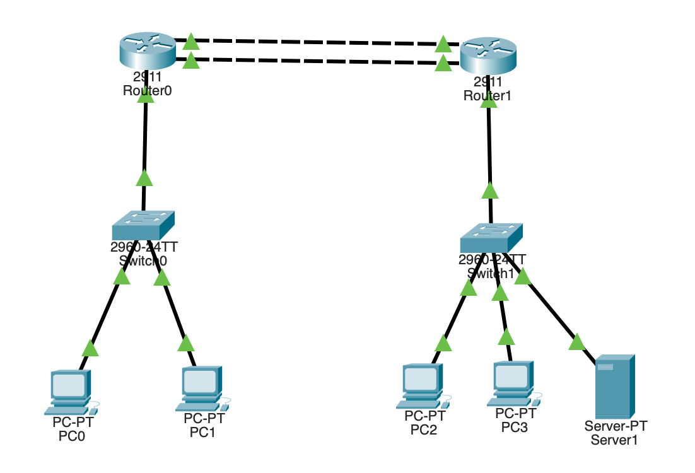

About
Networking · Security · Cloud
I learn networking and security by running the infrastructure, not by reading about it.
I'm a third-year Computer Science student at the University of Guelph with an area of emphasis in cybersecurity. I write the CompTIA Network+ exam on October 30 and I'm working toward the Security+ after that.
- BCH.CS, Cybersecurity
- Network+ exam Oct 2026
- Open to Summer 2027 internships
Projects
Home lab · Raspberry Pi
Network-wide DNS filtering and monitoring
Took DHCP off the ISP router and put it on a Raspberry Pi, so any device that joins my home network has every domain it looks up checked against 2.6 million ad, tracker, malware and phishing domains by default. Anything on the list is answered with a dead address and never contacted, with nothing installed on the device itself. It handles about 76,000 lookups a day across 32 devices and blocks 23.8% of them. Tailscale carries the same filtering to my phone and laptop away from home.
Read the full write-up →
Cisco Packet Tracer
Two-site enterprise network
A hospital network across two sites: 5 subnets on 3 VLANs with router-on-a-stick inter-VLAN routing, one DHCP server serving both sites over relay, OSPF failing over between redundant WAN links in about a second, and guests isolated behind an ACL that denies every internal subnet.
Read the full write-up →Skills
Networking
- TCP/IP
- DNS
- DHCP
- DHCP relay
- Subnetting
- VLANs
- 802.1Q trunking
- Inter-VLAN routing
- OSPF
Security
- ACLs
- Network segmentation
- DNS filtering
- Threat-intel blocklists
- VPNs
- SSH
Tools
- Python
- SQL
- Wireshark
- GitHub
- Tailscale
- Linux
Contact
- LinkedInlinkedin.com/in/ognjen-bobic
- Phone(647) 562-4071
- Email1bobicogn@gmail.com